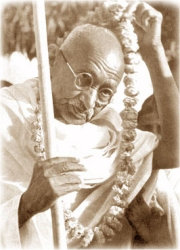
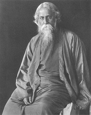
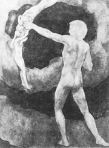
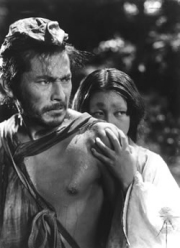
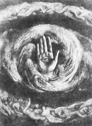
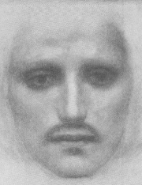

Mahátma (Velký duch) Gándhí
Co víš o Gándhím?
|
ORIENT
Na počátku 20. stol. byla většina orientálních oblastí v Asii i Africe pod koloniální správou, která zanedbávala jejich rozvoj. Pro evropské státy byly zdrojem surovin, zemědělských plodin, levné pracovní síly nebo vojáků. V koloniích ale postupně rostlo národní uvědomění a touha po politické nezávislosti.
Spisovatelé z oblasti Orientu se intenzivně zajímali o moderní evropskou a americkou literaturu. Snažili se oprostit od tradičních postupů a vyrovnat se s impulzy západních autorů. V konfrontaci orientální tradice a nových uměleckých postupů vznikla řada zajímavých děl. Opačné všeobecné nadšení Západu pro Orient přišlo až v 60. letech 20. století. Tato móda trvá do dnešních časů, kdy je vzájemná kulturní inspirace velmi intenzivní. Neomezuje se pouze na beletrii, ale zahrnuje rovněž hudbu nebo výtvarné umění.
Symbolem úsilí orientálního světa o vymanění z evropského vlivu se stal Mahátma Gándhí, který se rozhodl nejít cestou revoluce, ale morálního nátlaku. Držel dlouhé hladovky a usiloval o osamostatnění Indie pokojnou cestou.
|
Historie
O území Číny usilovala Velká Británie, Rusko i Japonsko, ale roku 1911 dosáhl Sunjatsen jejího osamostatnění. Islámské státy začaly být pro koloniální velmoci zajímavé díky těžbě ropy. Japonsko se zapojilo do 2. sv. války na straně nacistického Německa a fašistické Itálie. V roce 1947 vznikly z britské kolonie dva samostatné státy – hinduistická Indie a muslimský Pákistán.
|
Rabíndranáth Thákur
(1861-1941)
Bengálský básník Rabíndranáth Thákur žil v indické Kalkatě. Je autorem asi dvou set knih. Některé z nich si sám přeložil do angličtiny. Thákurovy bengálské básně měly složitý rytmus a písňovou formu, ale autor se rozhodl nehledat jeho obdobu v anglickém jazyce a přetlumočil je prózou. Roku 1913 získal Nobelovu cenu za literaturu.
|
Rabíndranáth Thákur: Gítándžalí
Básnickou sbírku Gítándžalí tvoří Thákurova duchovní lyrika. Některé básně připomínají modlitby, jiné jsou rozhovorem s Bohem nebo meditacemi nad náboženskými otázkami.
|

František Drtikol: Thákur
Která z básní tě zaujala nejvíce? Proč?
|
Chalíl Džibrán (1883-1931)
Libanonský spisovatel Chalíl Džibrán (Kahlil Gibran) žil v USA a psal arabsky i anglicky. Věnoval se také malířství. Džibrán se hlásil k maronitům (křesťané syrského ritu), ale po vydání knihy Vzbouřené duše byl z této církve exkomunikován. Napsal knihy Blázen, Předzvěst, Prorok, Zahrada prorokova nebo Zlomená křídla.
|
Chalíl Džibrán: Prorok
Děj duchovní prózy Prorok je minimální. Mudrc Mustafa se odhodlal k návratu na rodný ostrov. Před odchodem z města Orfalu sděluje shromážděným lidem své názory na různá témata. Postupně promlouvá o lásce, manželství, dětech, dávání, jídle a pití, práci, zákonech, svobodě, bolesti, učení, přátelství, mluvení, dobru a zlu, kráse, náboženství nebo o smrti.
Druhá část Zahrada prorokova zůstala nedokončena. Mustafa vyučuje v zahradě své žáky, ale ti jeho poselství nerozumějí. Ze třetí části Smrt prorokova zbyl jenom plán. Nepochopený Mustafa se měl vrátit z rodného ostrova zpět do Orfalu, kde ho jeho dřívější obdivovatelé ukamenují.
|

Džibránova ilustrace
Souhlasíš s myšlenkami, které sděluje Mustafa?
Co si myslíš o rčení „doma není nikdo prorokem“?
|
Džajšankar Prasád (1889-1937)
Hindský spisovatel Džajšankar Prasád patří k předním představatelům čhájávádu. Je autorem eposu Kámájaní, povídky Stín nebo historického dramatu Čandragupta.
Co má symbolizovat „rubín v hadrech“?
Jaké zkušenosti máš se starými lidmi?
Jak si představuješ vlastní stáří?
|
Džajšankar Prasád: Rubín v hadrech
Krátká povídka Rubín v hadrech líčí osudy staré ženy na sklonku života.
|
Čhájávád
Počátkem 20. století se v Indii prosadil nový umělecký směr čhájávád (umění stínu), který je obdobou evropského romantismu. Jeho hlavním znakem byl odklon od tradičních mytologických a staroindických námětů. Stoupenci čhájávádu upřednostňovali líčení přírody, vyznávali tvůrčí svobodu a subjektivismus.
|
Rjúnosuke Akutagawa
(1892-1927)
Japonský novelista Rjúnosuke Akutagawa vyučoval angličtinu a živil se jako redaktor. Napsal na 150 povídek v duchu tzv. nového realismu. Shrnul je do sbírek Rašómon, Loutkář, Jarní plášť nebo Vějíř z Kónanu. Trpěl depresemi a nakonec spáchal sebevraždu.
|
Rjúnosuke Akutagawa: Rašómon
Akutagawa čerpal náměty ke svým prózám především z klasické sbírky Příběhy ze starých časů, která vznikla v 11. století a obsahuje přes tisíc povídek. Tyto příběhy obohatil o propracovanou psychologii postav a novátorské způsoby vyprávění. Jeho povídka Rašómon vychází ze dvou starých příběhů – Vyprávění o zloději, který vystoupil na bránu Rašó a viděl tam mrtvoly a Vyprávění o ženě, která prodávala ryby v ležení vojáků. Autor líčí rozvrat v hlavním městě Kjótu postiženém zemětřeseními, válkami, epidemiemi a všudypřítomnou bídou.
|

Kurosawa: Rašomón
Jak se ti líbila tato povídka?
Proč lidé kradou?
Jak se může stát z obyčejného člověka zloděj?
Jaký je rozdíl mezi zlodějem, loupežníkem, pirátem a tunelářem? Najdi různá synonyma pro tyto výrazy.
|
Sádek Hedájat (1903-1951)
Perský spisovatel Sádek Hedájat studoval ve Francii. Spolu s dalšími literáty usiloval o modernizaci tradiční literatury, zároveň ale sbíral lidovou slovesnost a překládal staroperské i evropské (Kafka) texty do novoperštiny. Žil v Íránu a Indii. Později se znovu vrátil do Paříže, kde ukončil svůj život sebevraždou. Je autorem povídkových sbírek Zaživa pohřbený, Tři kapky krve nebo Šerosvit.
|
Sádek Hedájat: Slepá slova
Hlavní postavou novely Slepá slova je nemocný malíř penálů, kterému se zdá v opiovém opojení sen o krásné dívce. Zjišťuje ale, že dívka, která ho navštívila v jeho pokoji, je mrtvá. Z malířova vyprávění na hranici snu a skutečnosti vyplývá, že zavraždil svou nevěrnou manželku.
|

Džibránova ilustrace
Jaký je hlavní hrdina novely?
Najdi v textu orientální motivy.
|
|
|
Další autoři a jejich díla
Prémčand: Oběť
|
|
Internetové stránky
Gándhí
Gándhí
Thákur
Thákur: Česání ovoce
Gibran: Prorok
Gibran
Gibran
Gibran
Hindská literatura
Hindská literatura
Prémčand: Toto je moje vlast
Marková: Čhájávád
Béčan Šarma Ugr: Chamtivec
Japonská literatura
Japonsko, spisovatelé
Filmy
Rašómon, režie A.Kurosawa
|
Doporučená četba
Akutagawa, Rjúnosuke: Obraz pekla a jiné povídky, přel. V.Hilská, SNKLHU, Praha 1960
Clémentová, Catherine: Gándhí, síla pravdy, přel. Večerková, Heřman, Slovart, Bratislava 1994
Džibrán, Chalíl: Prorok, Zahrada prorokova, přel. Merhautovi, Vyšehrad, Praha 1992
Filipský, Jan: M. K. Gándhí, Horizont, Praha 1989
Gándhí, Mahátma: Ethické náboženství, Praha 1924
Gándhí, M.K.: Můj život, přel. P.Moudrá, Orbis, Praha 1931
Hedájat, Sádek: Tři kapky krve, přel. V.Kubíčková, SNKLU, Praha 1964
Lesný, Vincenc: Rabíndranáth Thákur (Tagore), Osobnost a dílo, Kladno 1937
Marková, Dagmar: Hrdinky Kámasútry, historie indické ženy, Dar Ibn Rushd, Praha 1998
Marková, D.: Moderní hindské povídky, Dar Ibn Rushd, Praha 2000
Nový Orient (časopis)
Průšek, J. a kol: Slovník spisovatelů Asie a Afriky (2 svazky), Praha 1967
Rolland, Romain: Máhátma Gándhí, Praha 1932
Rolland, R.: Mystický a činný život Indie, přel. J.Zaorálek, Eminent, Praha 1995
Thákur, Rabíndranáth: Gítándžalí, přel. F.Balej, Nakladatelství R.K.Lukášek, Trutnov 1990
Thákur, R.: Zahradník, přel. D.Zbavitel, Mladá fronta, Praha 1999
Zbavitel, D.: Rabíndranáth Thákur, Praha 1961
Země se sněžnou čelenkou, Moderní hindská poezie, Československý spisovatel, Praha 1975
|
Vypracuj písemný referát o některé z uvedených knih.

Džibrán: Prorok Mustafa
|
|